An ocean planet has one wound in its seafloor, and something at the bottom of it is sending a signal. Machines stop working down there and free crews don't come back, so Tethys sends a convict instead.
First-person underwater horror, survival and mystery
In development in Unreal Engine 5
Surface to about 1,000 m · seven strata above the Floor
The Open Sea
From Anchorage at the surface down to the seafloor. Bright, and full of life. The last time you see the sky.
Hadra
Hadra orbits a dim red dwarf 31 light-years from Earth. It is slightly smaller than Earth and has no land at all. A single ocean covers the whole planet under a permanent overcast.
The only feature anyone has charted is the Throat, a vertical fissure 400 m wide in the seafloor.
The signal
In 2193 a survey probe went down the Throat and fired one deep sonar pulse straight down. The return came back louder than the pulse that went down. An hour later the probe stopped transmitting.
The return never stopped. It cannot be heard from the surface. Below about 1,000 m, anything that listens picks it up: one deep, slow pulse every eleven minutes.
Tethys wants two answers: what is sending it, and what it is made of.
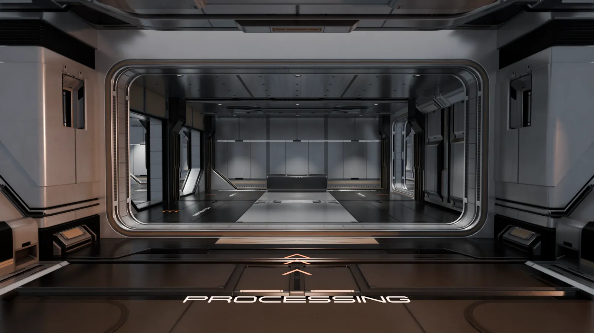
Arrivals at Anchorage. Nobody lives here.
The Commutation
Machines stop working down there, and free crews don't come back. Free crews are expensive, and their families ask questions.
So Tethys found people nobody asks about. A prisoner serving life, or waiting for execution, can sign a Descent Commutation.
The subject is converted before transport. Both arms and both legs are replaced with reinforced limbs of metal alloy.
Transport is nineteen years in cryo aboard a Tethys ship.
Reaching the source of the signal ends the sentence outright.
Nobody has collected yet.
What is left of you
Your new limbs run on charge, do not tire and do not feel the cold. Everything else is still human, and it needs four things.
The conversion was only the start. Your limbs are built to be opened and refitted, and the rest of you can take more hardware.
Charge
Your limbs run on power from the carrier.
Food
You can eat, or plug the port in your side into the nutrient line in the wall. Its reserve runs out, and the only way to refill it is to catch what lives in the water.
Air
You still breathe. In the water you breathe from a tank.
Warmth
The cabin is held at 26 °C, because everything but your limbs is still human.
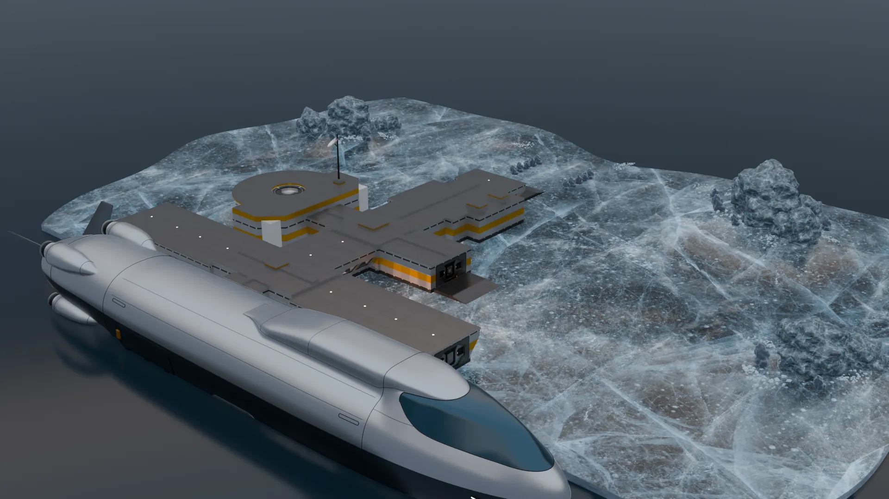
Anchorage on its ice floe, at sea level above the Throat. Model render.
The CANTICLE
The ship that brought you stays in orbit. It sends you down to Anchorage, where the carrier is already moored, fuelled and ready.
The CANTICLE is a deep carrier built for a crew of one. Every section of it is modular. You refit it as you go, and you build and place what stands inside it.
You steer it yourself. It is too big for most of the Throat, so it goes where you open a way for it. There is no other way down.
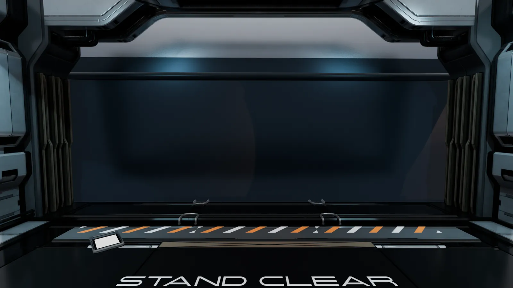
The boarding bridge at the hull.
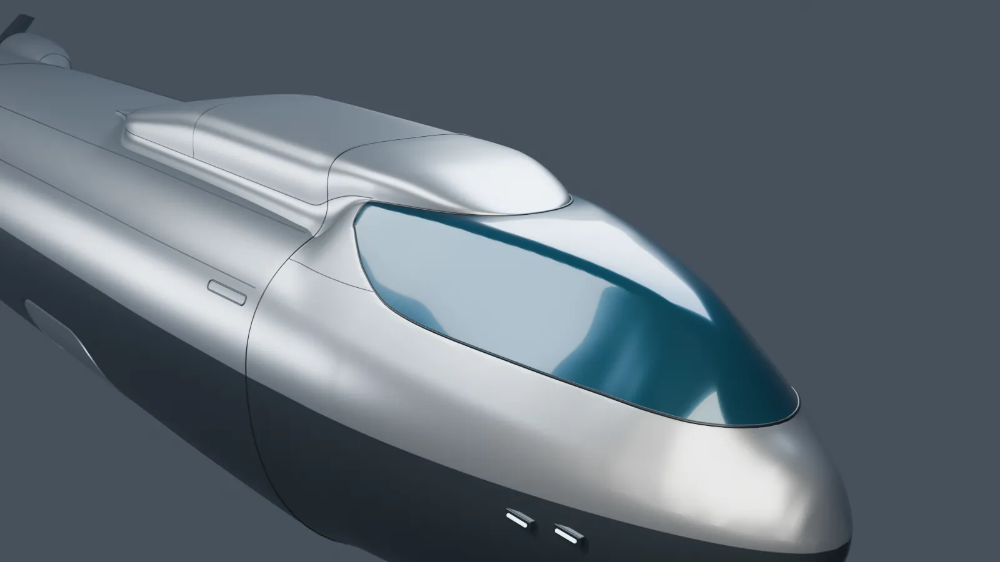
The forebody and the bridge window.
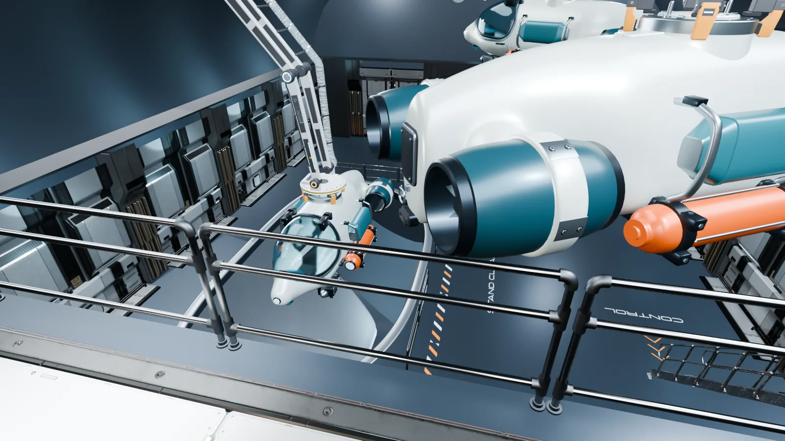
The sub bay, with a Tender on the docking arm.
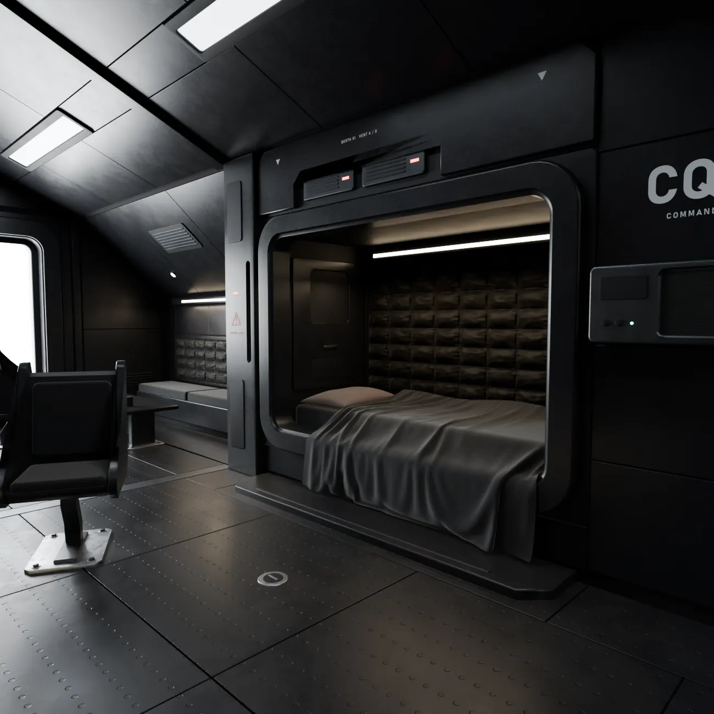
Quarters.
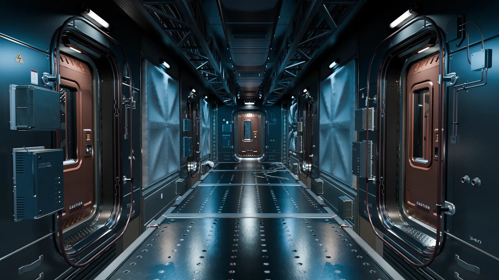
The fore passage.
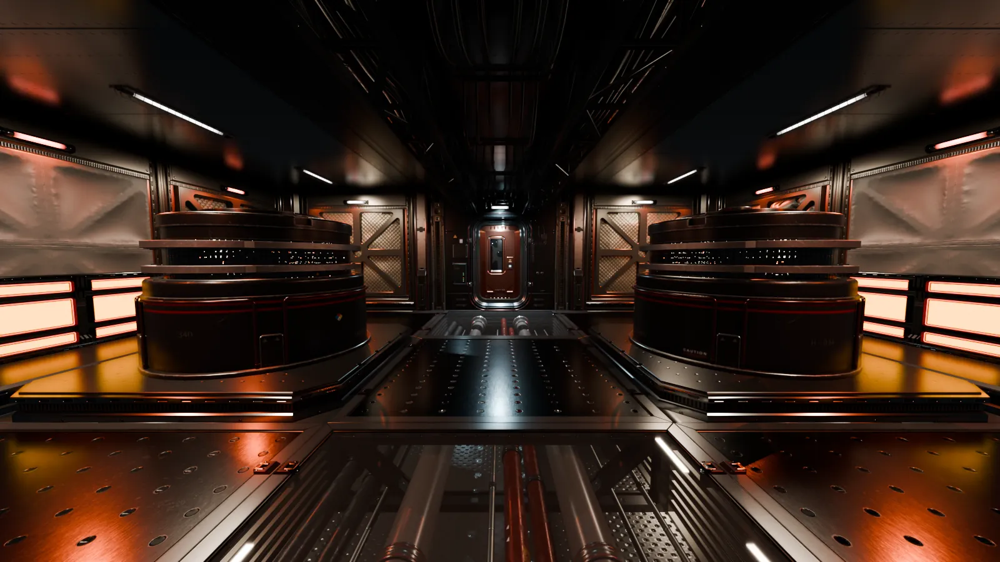
The reactor room.
About 1,000 m, the seafloor · six strata above the Floor
The Throat
Caves and cavities in black basalt and silt, and the first ore. The last dim red light.
Open the way
The carrier's bay holds Tenders: small modular submarines that you build and refit as you go. The bay is empty when you arrive. Until the first Tender is built, you leave through the moon pool, swim, and cut ore loose with a handheld tool.
Take a Tender out through the moon pool.
Find a way down, with sonar or by swimming.
Drill through what blocks it.
Collect the ore, and catch what lives there.
Cut the passage wide enough for the carrier.
Go back aboard and take the carrier through yourself.
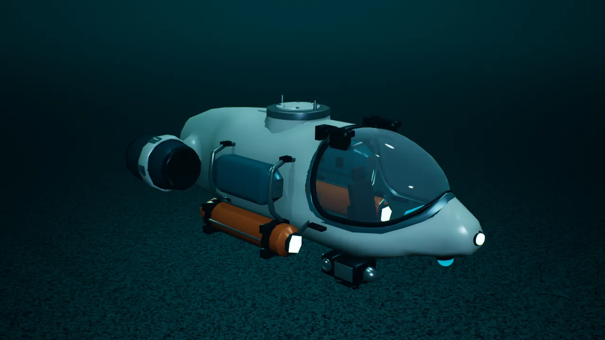
A Tender on the seabed. In-engine capture, work in progress.
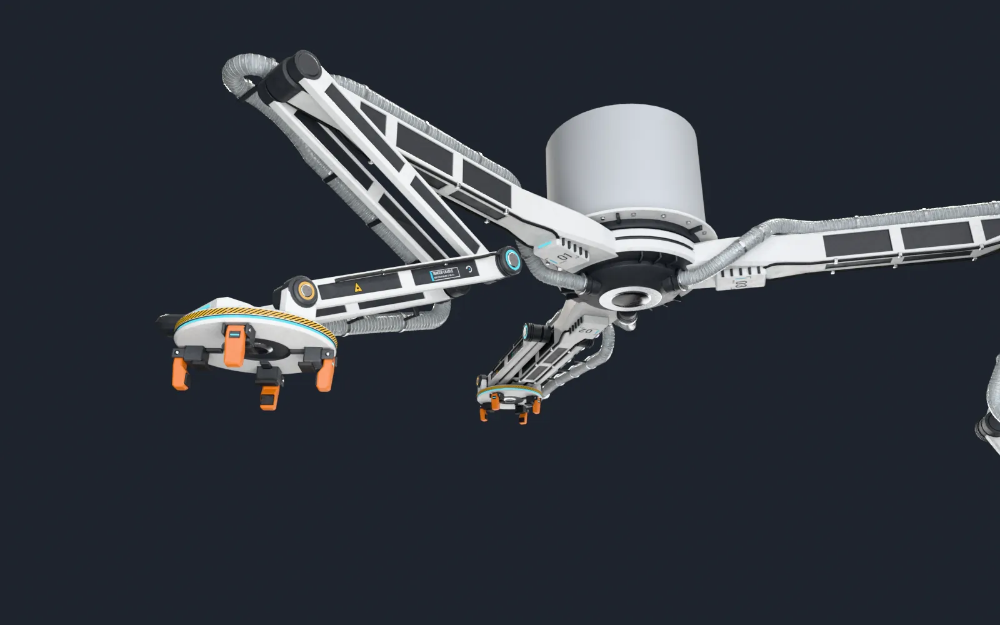
The bay's docking arm carries the Tenders to the moon pool. Model render.
Ore
A Tender drills first, then draws the loose ore into its hold. Docked, it unloads through clear pipes into the cargo bay, where the ore is packed into boxes. You carry each box to the refinery yourself, until you have built something to carry it for you.
Ore is refined on board into everything you need: hull sections, Tender frames, drill heads, robots, and parts for yourself.
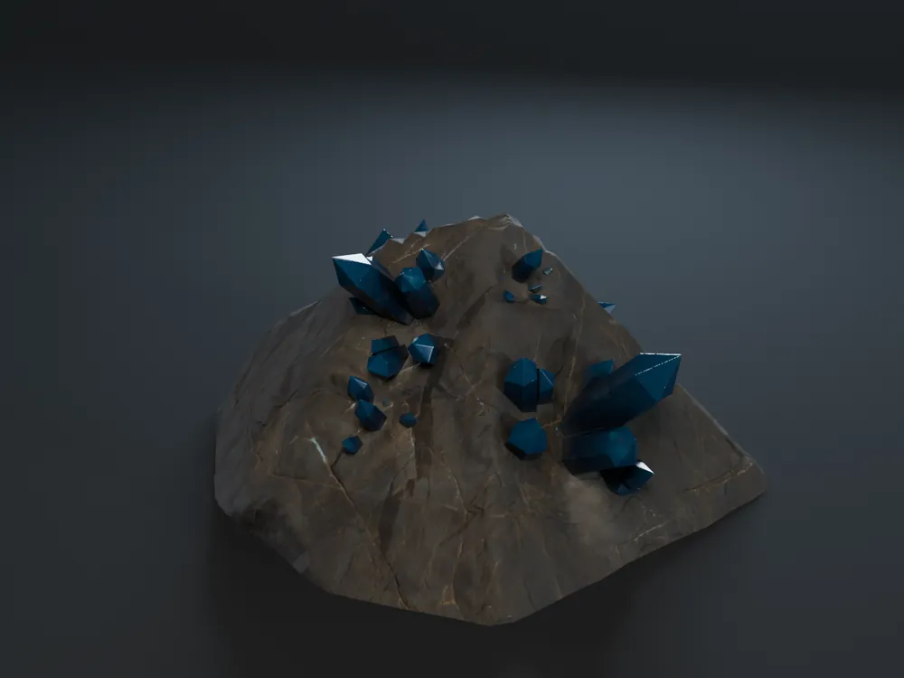
Cobalt.
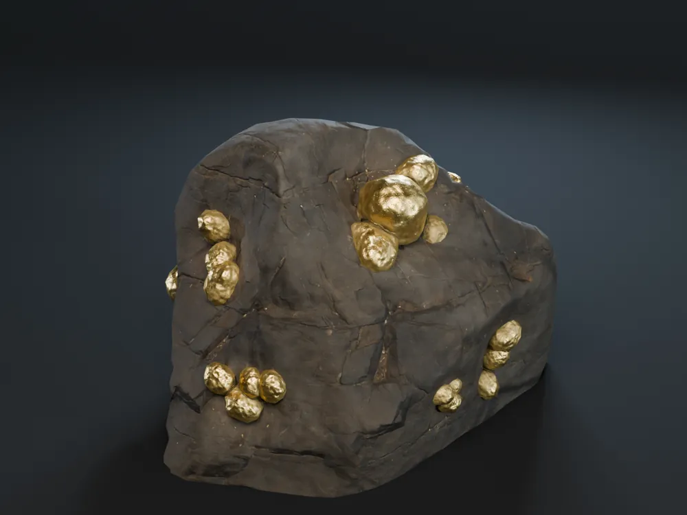
Gold.
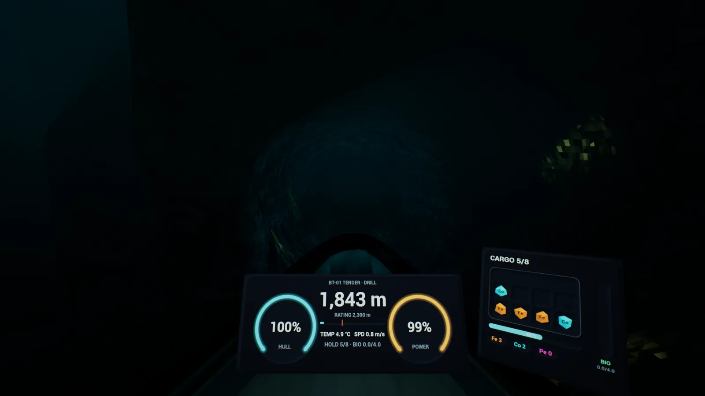
The Tender's dashboard: hull, depth, power, and the cargo hold filling. In-engine capture, work in progress.
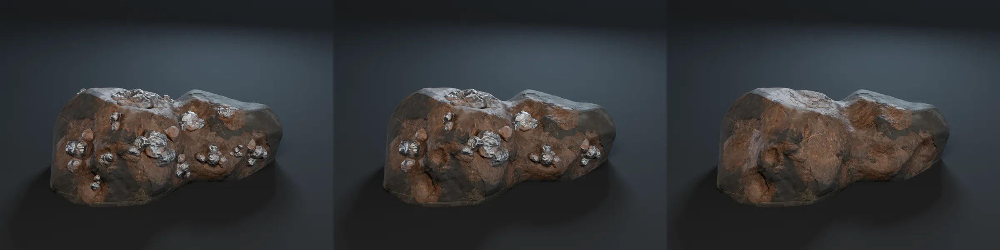
One ore patch as it is mined out. Model render.
Five strata above the Floor
From here down, the survey is withheld by Tethys Consolidated.
No map of the Throat stays true for long.
Four strata above the Floor
Three strata above the Floor
The deeper you go, the bigger the creatures get, and the rarer they are.
Two strata above the Floor
One stratum above the Floor
Tethys also left you your fear. It is not a defect.
The source
The Floor
The official survey lists it as "the Floor, depth unknown".